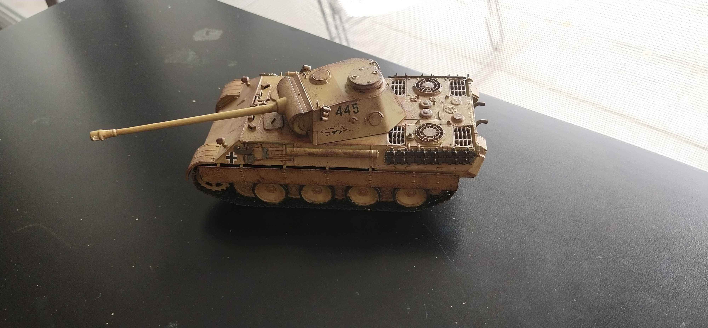

[Country Title]
- Hello travellers! My name is Kevin and I'm a second year UNSW student studying compsci!!!
- I'm 19 years old
- My favourite noun is 'mumpsimus', my favourite verb is 'defenestrate' and my favourite adjective is 'phantasmagorical'
- I love cats but I think I'm allergic to them
- Trying my best to get better at programming:
- This popup didn't have much to do with the titular country...but the other ones will I promise!
- I love to watch anime and read manga/visual novels in my spare time. Some of my favourites are:
- I also studied Japanese throughout highschool for 6 years, but don't ask me to say something in Japanese cause I forgor :p
- ごめんなさい、チェン先生！日本語を忘れてしまいました！
- Even though I'm super Australian I was actually born in Shanghai
- I LOVE jiaozi! I can scarf down like 20 in one sitting
- Also I have hundreds of hours in genshin impact and honkai star rail
- P.S. There is an easter egg somewhere on this page. See if you can find it...


- This is the part where I talk about movies and video games (not just the ones from America, mind you)
- I watch a lot of war movies like Saving Private Ryan, Waterloo and Apocalypse Now. I loved the last one so much I even did an assignment on it in highschool...
- I also enjoy the Lord of the Rings films because they are PEAK fiction
- Games-wise, I'm currently playing through these two MASTERPIECES:
- I build scale models such as these ones:
- This is definitely relevant to the UK because a bunch of people there have this same hobby (i think)
- I also write things and a very long time ago I wrote a young adult novella set in a futuristic UK ‚òùü§ì
- Behold, my 42,000-word not-at-all-cringey magnum opus!


- I think musicals are pretty cool!
- Shoutout to Hamilton, Phantom of the Opera and Les Misérables for giving me something France-related to talk about in this popup!
- Unfortunately I've never been to one in person ‚Äî I've experienced many a musical vicariously through youtube videosüòû
Also many thanks to France for inventing french fries!
- My favourite food in the entire world is PIZZA

penguins
snow
sand
maths
tulips